- 00 学习指南 如何学习这门编译原理实战课？.md.html
- 00 开篇词 在真实世界的编译器中游历.md.html
- 01 编译的全过程都悄悄做了哪些事情？.md.html
- 02 词法分析：用两种方式构造有限自动机.md.html
- 03 语法分析：两个基本功和两种算法思路.md.html
- 04 语义分析：让程序符合语义规则.md.html
- 05 运行时机制：程序如何运行，你有发言权.md.html
- 06 中间代码：不是只有一副面孔.md.html
- 07 代码优化：跟编译器做朋友，让你的代码飞起来.md.html
- 08 代码生成：如何实现机器相关的优化？.md.html
- 09 Java编译器（一）：手写的编译器有什么优势？.md.html
- 10 Java编译器（二）：语法分析之后，还要做些什么？.md.html
- 11 Java编译器（三）：属性分析和数据流分析.md.html
- 12 Java编译器（四）：去除语法糖和生成字节码.md.html
- 13 Java JIT编译器（一）：动手修改Graal编译器.md.html
- 14 Java JIT编译器（二）：Sea of Nodes为何如此强大？.md.html
- 15 Java JIT编译器（三）：探究内联和逃逸分析的算法原理.md.html
- 16 Java JIT编译器（四）：Graal的后端是如何工作的？.md.html
- 17 Python编译器（一）：如何用工具生成编译器？.md.html
- 18 Python编译器（二）：从AST到字节码.md.html
- 19 Python编译器（三）：运行时机制.md.html
- 20 JavaScript编译器（一）：V8的解析和编译过程.md.html
- 21 JavaScript编译器（二）：V8的解释器和优化编译器.md.html
- 22 Julia编译器（一）：如何让动态语言性能很高？.md.html
- 23 Julia编译器（二）：如何利用LLVM的优化和后端功能？.md.html
- 24 Go语言编译器：把它当作教科书吧.md.html
- 25 MySQL编译器（一）：解析一条SQL语句的执行过程.md.html
- 26 MySQL编译器（二）：编译技术如何帮你提升数据库性能？.md.html
- 27 课前导读：学习现代语言设计的正确姿势.md.html
- 28 前端总结：语言设计也有人机工程学.md.html
- 29 中端总结：不遗余力地进行代码优化.md.html
- 30 后端总结：充分发挥硬件的能力.md.html
- 31 运行时（一）：从0到语言级的虚拟化.md.html
- 32 运行时（二）：垃圾收集与语言的特性有关吗？.md.html
- 33 并发中的编译技术（一）：如何从语言层面支持线程？.md.html
- 34 并发中的编译技术（二）：如何从语言层面支持协程？.md.html
- 35 并发中的编译技术（三）：Erlang语言厉害在哪里？.md.html
- 36 高级特性（一）：揭秘元编程的实现机制.md.html
- 37 高级特性（二）：揭秘泛型编程的实现机制.md.html
- 38 综合实现（一）：如何实现面向对象编程？.md.html
- 39 综合实现（二）：如何实现函数式编程？.md.html
- 40 成果检验：方舟编译器的优势在哪里？.md.html
- 不定期加餐1 远程办公，需要你我具备什么样的素质？.md.html
- 不定期加餐2 学习技术的过程，其实是训练心理素质的过程.md.html
- 不定期加餐3 这几年，打动我的两本好书.md.html
- 不定期加餐4 从身边的牛人身上，我学到的一些优秀品质.md.html
- 不定期加餐5 借助实例，探究C++编译器的内部机制.md.html
- 划重点 7种编译器的核心概念与算法.md.html
- 期末答疑与总结 再次审视学习编译原理的作用.md.html
- 热点问题答疑 如何吃透7种真实的编译器？.md.html
- 用户故事 易昊：程序员不止有Bug和加班，还有诗和远方.md.html
- 知识地图 一起来复习编译技术核心概念与算法.md.html
- 结束语 实战是唯一标准！.md.html
- 捐赠
12 Java编译器（四）：去除语法糖和生成字节码
你好，我是宫文学。今天是Java编译器的最后一讲，我们来探讨编译过程最后的两个步骤：去除语法糖和生成字节码。
其实今天要讲的这两个编译步骤，总体上都是为生成字节码服务的。在这一阶段，编译器首先会把语法糖对应的AST，转换成更基础的语法对应的AST，然后基于AST和符号表，来生成字节码。
从AST和符号表，到变成字节码，这可是一个很大的转变，就像把源代码转化成AST一样。那么，这个过程的实现思路是什么？有什么难点呢？
今天这一讲，我们就一起来解决以上这些问题，在这个过程中，你对Java编译器的认识会变得更加完整。
好了，我们首先来看看去除语法糖这一处理步骤。
去除语法糖（Syntactic Sugar）
Java里面提供了很多的语法糖，比如泛型、Lambda、自动装箱、自动拆箱、foreach循环、变长参数、内部类、枚举类、断言（assert），等等。
你可以这么理解语法糖：它就是提高我们编程便利性的一些语法设计。既然是提高便利性，那就意味着语法糖能做到的事情，用基础语法也能做到，只不过基础语法可能更啰嗦一点儿而已。
不过，我们最终还是要把语法糖还原成基础语法结构。比如，foreach循环会被还原成更加基础的for循环。那么，问题来了，在编译过程中，究竟是如何去除语法糖的？基础语法和语法糖又有什么区别呢？
在第10讲中，我提到过，在JDK14中，去除语法糖涵盖了编译过程的四个小阶段。
- TRANSTYPES：泛型处理，具体实现在TransTypes类中。
- TRANSPATTERNS：处理模式匹配，具体实现在TransPattern类中。
- UNLAMBDA：把LAMBDA转换成普通方法，具体实现在LambdaToMethod类中。
- LOWER：其他所有的语法糖处理，如内部类、foreach循环、断言等，具体实现在Lower类中。
以上去除语法糖的处理逻辑都是相似的，它们的本质都是对AST做修改和变换。所以，接下来我挑选了两个比较有代表性的语法糖，泛型和foreach循环，和你分析它们的处理过程。
首先是对泛型的处理。
Java泛型的实现比较简单，LinkedList<String>和LinkedList对应的字节码其实是一样的。泛型信息<String>，只是用来在语义分析阶段做类型的检查。检查完之后，这些类型信息就会被去掉。
所以，Java的泛型处理，就是把AST中与泛型有关的节点简单地删掉（相关的代码在TransTypes类中）。
对于“ List<String> names = new ArrayList<String>() ”这条语句，它对应的AST的变化过程如下，其中，橙色的节点就是被去掉的泛型。
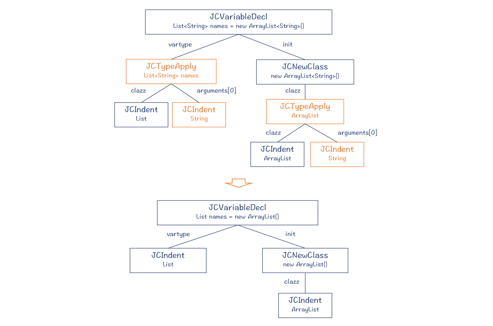
图1：对泛型的处理
然后，我们分析下对foreach循环的处理。
foreach循环的意思是“遍历每一个成员”，它能够以更简洁的方式，遍历集合和数组等数据结构。在下面的示例代码中，foreach循环和基础for循环这两种处理方式的结果是等价的，但你可以看到，foreach循环会更加简洁。
public static void main(String args[]) {
List<String> names = new ArrayList<String>();
...
//foreach循环
for (String name:names)
System.out.println(name);
//基础for循环
for ( Iterator i = names.iterator(); i.hasNext(); ) {
String name = (String)i.next();
System.out.println(name);
}
}
Java编译器把foreach循环叫做增强for循环，对应的AST节点是JCEnhancedForLoop。
针对上面的示例代码，我们来对比一下增强for循环的AST和去除语法糖之后的AST，如下图所示：
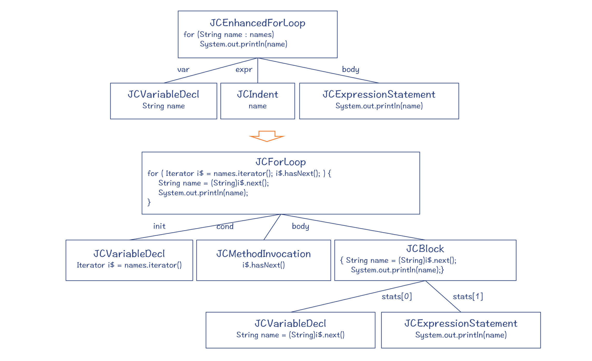
图2：foreach循环被改造成普通的for循环
你可以通过反编译，来获得这些没有语法糖的代码，它跟示例代码中用到的基础for循环语句是一样的。
对foreach循环的处理，是在Lower类的visitForeachLoop方法中。
其实，你在阅读编译技术相关的文献时，应该经常会看到Lower这个词。它的意思是，让代码从对人更友好的状态，变换到对机器更友好的状态。比如说，语法糖对编程人员更友好，而基础的语句则相对更加靠近机器实现的一端，所以去除语法糖的过程是Lower。除了去除语法糖，凡是把代码向着机器代码方向所做的变换，都可以叫做Lower。以后你再见到Lower的时候，是不是就非常清楚它的意思了呢。
好了，通过对泛型和foreach循环的处理方式的探讨，现在你应该已经大致了解了去除语法糖的过程。总体来说，去除语法糖就是把AST做一些变换，让它变成更基础的语法要素，从而离生成字节码靠近了一步。
那么接下来，我们看看编译过程的最后一个环节：生成字节码。
生成字节码（Bytecode Generation）
一般来说，我们会有一个错觉，认为生成字节码比较难。
实际情况并非如此，因为通过前面的建立符号表、属性计算、数据流分析、去除语法糖的过程，我们已经得到了一棵标注了各种属性的AST，以及保存了各种符号信息的符号表。最难的编译处理工作，在这几个阶段都已经完成了。
在第8讲中，我就介绍过目标代码的生成。其中比较难的工作，是指令选择、寄存器分配和指令排序。而这些难点工作，在生成字节码的过程中，基本上是不存在的。在少量情况下，编译器可能会需要做一点指令选择的工作，但也都非常简单，你在后面可以看到。
我们通过一个例子，来看看生成字节码的过程：
public class MyClass {
public int foo(int a){
return a + 3;
}
}
这个例子中，foo函数对应的字节码有四个指令：
public int foo(int);
Code:
0: iload_1 //把下标为1的本地变量(也就是参数a)入栈
1: iconst_3 //把常数3入栈
2: iadd //执行加法操作
3: ireturn //返回
生成字节码，基本上就是对AST做深度优先的遍历，逻辑特别简单。我们在第5讲曾经介绍过栈机的运行原理，也提到过栈机的一个优点，就是生成目标代码的算法比较简单。
你可以看一下我画的示意图，里面有生成字节码的步骤：
图3：生成字节码
- 第1步，把a的值入栈（iload_1）。
- 第2步，把字面量3入栈（iconst_3）。
- 第3步，生成加法运算指令（iadd）。这个操作会把前两个操作数出栈，把结果入栈。
- 第4步，生成return指令（ireturn）。
这里面有没有指令选择问题？有的，但是很简单。
首先，你注意一下iconst_3指令，这是把一个比较短的操作数压缩到了指令里面，这样就只需要生成一个字节码。如果你把3改成一个稍微大一点的数字，比如7，那么它所生成的指令就要改成“bipush 7”，这样就需要生成两个字节的字节码，一个字节是指令，一个字节是操作数。但这个操作数不能超过“2^7-1”，也就是127，因为一个字节只能表示-128~127之间的数据。
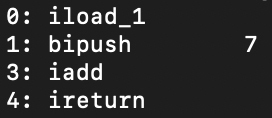
如果字面量值变成128，那指令就要变成“sipush 128”，占据三个字节，表示往栈里压入一个short数据，其中操作数占据两个字节。
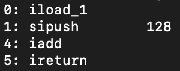
如果该常数超过了两个字节能表示的范围，比如“32768”，那就要改成另一个指令“ldc #2”，这是把常数放到常量池里，然后从常量池里加载。
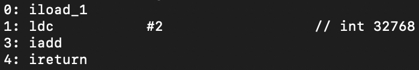
这几个例子反映了由于字面量的长度不同，而选用了不同的指令。接着，我们再来看看数据类型对指令的影响。
前面例子中生成的这四个指令，全部都是针对整数做运算的。这是因为我们已经在语义分析阶段，计算出了各个AST节点的类型，它们都是整型。但如果是针对长整型或浮点型的计算，那么生成的字节码就会不一样。下面是针对单精度浮点型所生成的字节码。
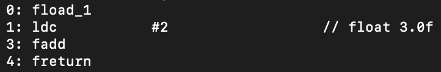
第三，数据类型影响指令生成的另一个情况，是类型转换。
一方面，阅读字节码的规范，你会发现对byte、short、int这几种类型做运算的时候，使用的指令其实是一样的，都是以i开头的指令。比如，加载到栈机都是用iload指令，加法都是用iadd指令。
在示例代码中，我们把foo函数的参数a的类型改成byte，生成的字节码与之前也完全一样，你可以自己去试一下。
public class MyClass {
public int foo(byte a){
return a + 3;
}
}
另一方面，在Java里把整型和浮点型做混合运算的时候，编译器会自动把整型转化成浮点型。比如我们再把示例代码改成下面这样：
public class MyClass {
public double foo(int a){
return a + 3.0;
}
}
这个时候，foo函数对应的字节码如下，其中 i2d指令就是把参数a从int型转换成double型：
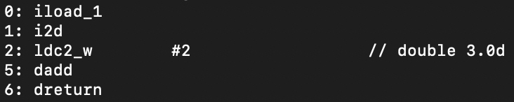
OK，到这里，我已经总结了影响指令生成的一些因素，包括字面量的长度、数据类型等。你能体会到，这些指令选择的逻辑都是很简单的，基于当前AST节点的属性，编译器就可以做成正确的翻译了，所以它们基本上属于“直译”。而我们在第8讲中介绍指令选择算法的时候，遇到的问题通常是结合了多个AST节点生成一条指令，它的难度要高得多。所以在第16讲，讲解Java的JIT编译器生成目标代码的时候，我会带你去看看这种复杂的指令选择算法的实现方式。
现在你对生成字节码的基本原理搞清楚了以后，再来看Java编译器的具体实现，就容易多了。
生成字节码的程序入口在com.sun.tools.javac.jvm.Gen类中。这个类也是AST的一个visitor。这个visitor把AST深度遍历一遍，字节码就生成完毕了。
在com.sun.tools.javac.jvm包中，有两个重要的辅助类。
第一个辅助类是Item。包的内部定义了很多不同的Item，代表了在字节码中可以操作的各种实体，比如本地变量（LocalItem）、字面量（ImmediateItem）、静态变量（StaticItem）、带索引的变量（IndexedItem，比如数组）、对象实例的变量和方法（MemberItem）、栈上的数据（StackItem）、赋值表达式（AssignItem），等等。
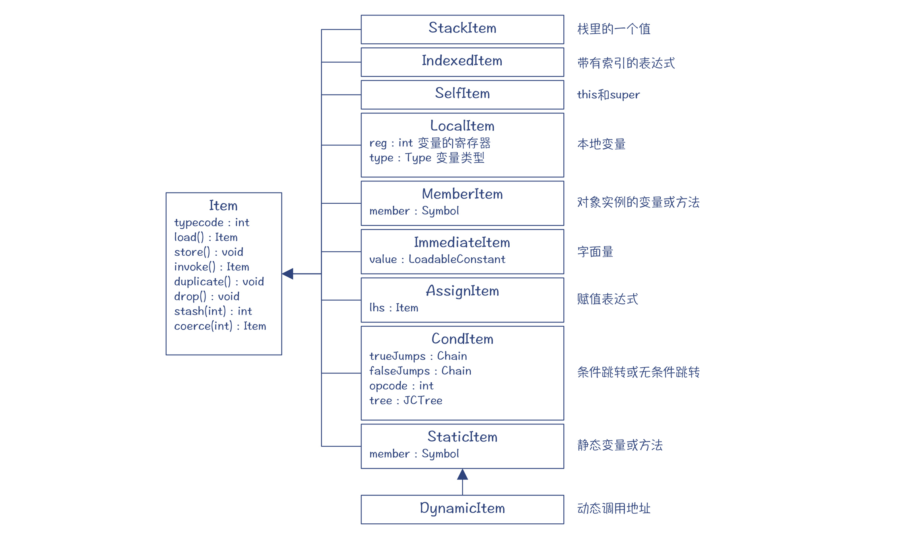
图4：生成字节码过程中的辅助类Item及其子类
每种Item都支持一套标准的操作，能够帮助生成字节码。我们最常用的是load()、store()、invoke()、coerce()这四个。
- load()：生成把这个Item加载到栈上的字节码。
我们刚才已经见到了两种Item的load操作，一个是本地变量a的（LocalItem），一个是立即数3的（ImmediateItem。在字节码和汇编代码里，如果一个指令的操作数是一个常数，就叫做立即数）。
你可以看一下ImmediateItem的load()方法，里面准确反映了我们前面分析的指令选择逻辑：根据字面量长度的不同，分别选择iconst_X、bipush、sipush和ldc指令。
Item load() {
switch (typecode) {
//对int、byte、short、char集中类型来说，生成的load指令是相同的。
case INTcode: case BYTEcode: case SHORTcode: case CHARcode:
int ival = numericValue().intValue();
if (-1 <= ival && ival <= 5)
code.emitop0(iconst_0 + ival); //iconst_X指令
else if (Byte.MIN_VALUE <= ival && ival <= Byte.MAX_VALUE)
code.emitop1(bipush, ival); //bipush指令
else if (Short.MIN_VALUE <= ival && ival <= Short.MAX_VALUE)
code.emitop2(sipush, ival); //sipush指令
else
ldc(); //ldc指令
break;
...
}
load()方法的返回值，是一个StackItem，代表加载到栈上的数据。
- store()：生成从栈顶保存到该Item的字节码。
比如LocalItem的store()方法，能够把栈顶数据保存到本地变量。而MemberItem的store()方法，则会把栈顶数据保存到对象的成员变量中。
invoke() : 生成调用该Item代表的方法的字节码。
coerce()：强制类型转换。
我们之前讨论的类型转换功能，就是在coerce()方法里完成的。
第二个辅助类是Code类。它里面有各种emitXXX()方法，会生成各种字节码的指令。
总结起来，字节码生成的总体框架如下面的类图所示：
- Gen类以visitor模式访问AST，生成字节码；最后生成的字节码保存在Symbol的code属性中。
- 在生成字节码的过程中，编译器会针对不同的AST节点，生成不同的Item，并调用Item的load()、store()、invoke()等方法，这些方法会进一步调用Code对象的emitXXX()方法，生成实际的字节码。
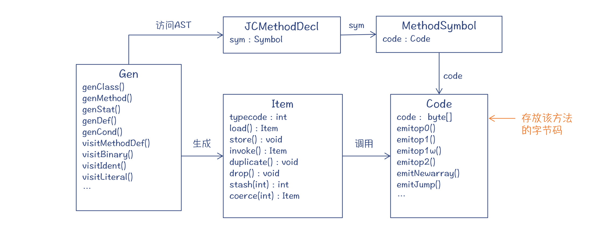
图5：生成字节码过程中涉及的类
好了，这就是生成字节码的过程，你会发现它的思路是很清楚的。你可以写一些不同的测试代码，观察它生成的字节码，以及跟踪生成字节码的过程，很快你就能对各种字节码是如何生成的了然于胸了。
代码优化
到这里，我们把去除语法糖和生成字节码两部分的内容都讲完了。但是，在Java编译器里，还有一类工作是分散在编译的各个阶段当中的，它们也很重要，这就是代码优化的工作。
总的来说，Java编译器不像后端编译器那样会做深度的优化。比如像下面的示例代码，“int b = a + 3”这行是无用的代码，用一个“死代码删除”的优化算法就可以去除掉。而在Java编译器里，这行代码照样会被翻译成字节码，做一些无用的计算。
int foo(){
int a = 2;
int b = a + 3; //这行是死代码，可以优化掉
return a;
}
不过，Java编译器还是在编译过程中，顺便做了一些优化：
1.ATTR阶段：常数折叠
在属性分析阶段做了常数折叠优化。这样，在生成字节码的时候，如果一个节点有常数值，那么就直接把该常数值写入字节码，这个节点之下的子树就都被忽略。
2.FLOW阶段：不可达的代码
在FLOW阶段，通过活跃性分析，编译器会发现某些代码是不可达的。这个时候，Java编译器不是悄悄地优化掉它们，而是会报编译错误，让程序员自己做调整。
3.LOWER阶段：代数简化
在LOWER阶段的代码中，除了去除语法糖，你还能看到一些代数简化的行为。给你举个例子，在Lower.visitBinary()方法中，也就是处理二元操作的AST的时候，针对逻辑“或（OR）”和“与（AND）”运算，有一些优化代码。比如，针对“或”运算，如果左子树的值是true，那么“或”运算对应的AST用左子树代替；而如果左子树是的值是false，那么AST可以用右子树代替。
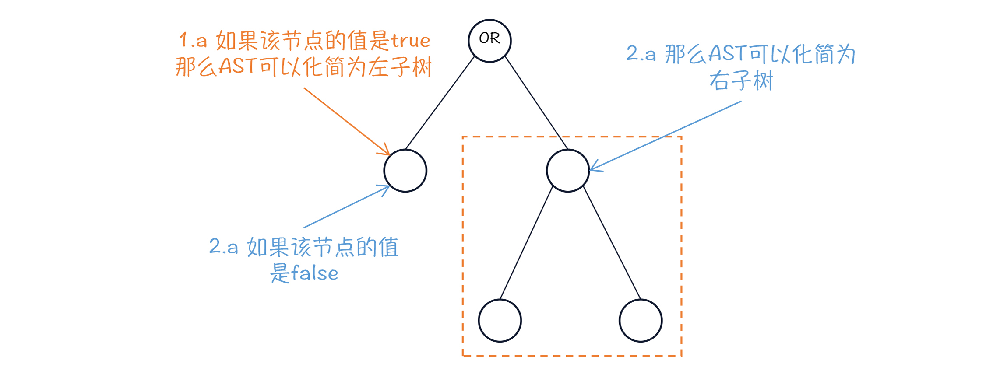
图6：对AST做代数简化
4.GEN阶段：代数简化和活跃性分析
在生成字节码的时候，也会做一些代数简化。比如在Gen.visitBinary()方法中，有跟Lower.visitBinary()类似的逻辑。而整个生成代码的过程，也有类似FLOW阶段的活跃性分析的逻辑，对于不可达的代码，就不再生成字节码。
看上去GEN阶段的优化算法是冗余的，跟前面的阶段重复了。但是这其实有一个好处，也就是可以把生成字节码的部分作为一个单独的库使用，不用依赖前序阶段是否做了某些优化。
总结起来，Java编译器在多个阶段都有一点代码优化工作，但总体来看，代码优化是很不足的。真正的高强度的优化，还是要去看Java的JIT编译器。这些侧重于做优化的编译器，有时就会被叫做“优化编译器（Optimizing Compiler）”。
课程小结
今天，我带你分析了Java编译过程的最后两个步骤：去除语法糖和字节码生成。你需要记住以下几点：
- 语法糖是现代计算机语言中一个友好的特性。Java语言很多语法上的升级，实际上都只是增加了一些语法糖而已。语法糖在Java编译过程中的去除语法糖环节会被还原成基础的语法。其实现机制，是对AST做修改和转换。
- 生成字节码是一个比较机械的过程，编译器只需要对AST进行深度优先的遍历即可。在这个过程中会用到前几个阶段形成的属性信息，特别是类型信息。
我把本讲的知识点整理成了思维导图，供你参考：
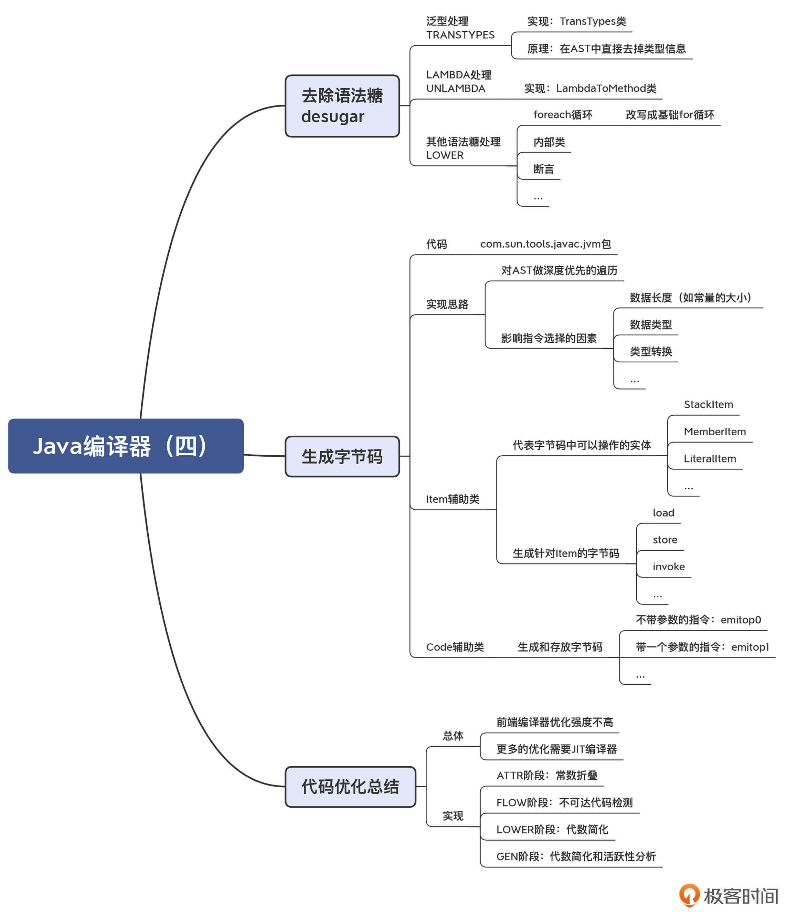
之所以我花了4讲去介绍Java编译器的核心机制，是因为像Java这样成熟的静态类型语言，它的编译器的实现思路有很多借鉴意义，比如词法分析和语法分析采用的算法、语义分析中多个阶段的划分和之间的相互关系、如何用各种方法检查语义错误、符号表的实现、语法糖和基础语法的关系，等等。当你把Java编译器的脉络看清楚以后，再去看其他静态类型语言的编译器的代码，就会发现其中有很多地方是共通的，你就能更快地熟悉起来。这样下来，你对静态语言编译器的前端，都会有个清晰的了解。
当然，只了解前端部分是不够的，Java还有专注于中后端功能的编译器，也就是JIT编译器。我们这讲也已经说过了，前端编译器的优化功能是有限的。那么，如果想让Java代码高效运行，就要依靠JIT编译器的优化功能和生成机器码的功能了。在后面的四讲中，我会接着给你揭秘Java的JIT编译器。
一课一思
针对Java编译器这4讲的内容，我们来做一个综合的思考题。假设你现在要写一个简单的DSL引擎，比如让它能够处理一些自定义的公式，最后要生成字节码，你会如何让它最快地实现？是否可以复用Java编译器的功能？
欢迎你留言分享自己的观点。如果觉得有收获，也欢迎你把今天的内容分享给更多的朋友。
参考资料
Java语言规范第六章：Java虚拟机指令集。
© 2019 - 2023 Liangliang Lee. Powered by gin and hexo-theme-book.